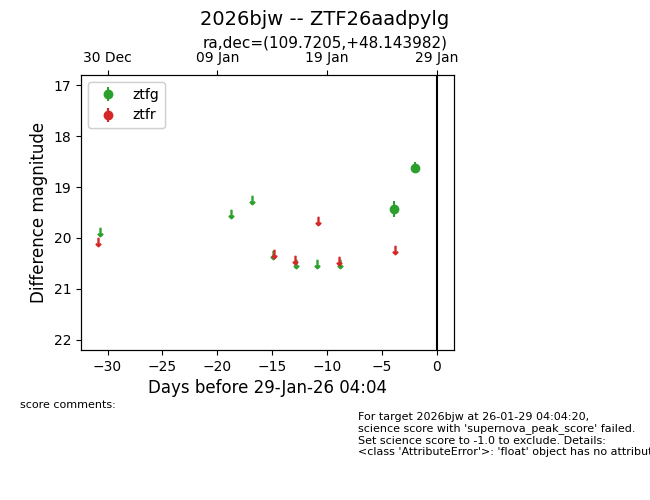
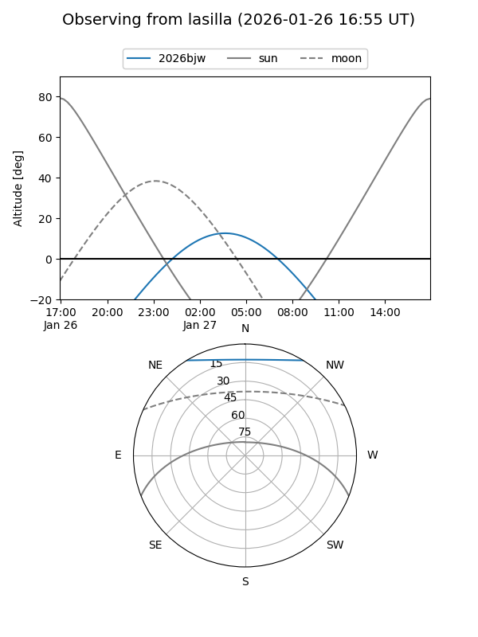
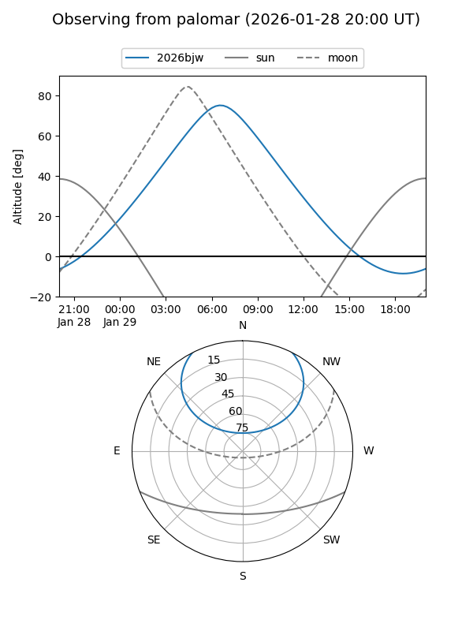

2026bjw
Target 2026bjw at 2026-01-27 04:01
Aliases and brokers:
FINK: link
Lasair: link
ALeRCE: link
TNS: link
YSE: link
alt names
ZTF26aadpylg (ztf,fink_ztf)
2026bjw (tns,yse)
Coordinates:
equatorial (ra, dec) = 109.7205,+48.14398
equatorial (HMS+DMS) = 07:18:52.93,+48:08:38.33
galactic (l, b) = (169.5293,+24.24070)
Flags:
Photometry:
last ztfg=18.62
2 ztfg detections
Lightcurve

Visibility


Additional plots